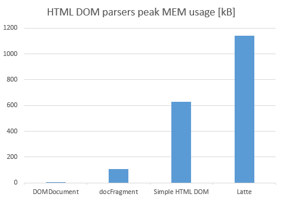

If one wants to create a HTML parser, there is a DOM Document, which is hard to compete with in PHP without FFI. It is written in C using pointers which are not available in PHP 8. There is a brave competitior Simple HTML DOM Parser with a handfull of easy-to-use functions and a dull competitor Latte which uses regular expressions to parse non-regular language of HTML.
Interestingly, all mentioned parsers are written using object in non-OOP languages. In this century OOP became so popular that procedural style is almost considered antipattern on higher level. To illustrate the advantages of procedural style, DocFragment is written as a single easy-to-understand function without recursion in below 10 kB code (half of it are comments).
DOMDocument source includes XML parsing, which is a great deal of extra effort. Latte is a full template system from which only the parser was considered (they call it "Compiler", OMG). Since Simple HTML DOM is not so eagerly commented, it is fair to say that procedural style takes some 1/10 code size of its OOP counterparts here.
To test DOM Parses, following snippet was used:
The parsing time is negligible among all DOM Parsers, however there are huge differences in memory usage:
Since PHP doesn't have pointers, PHP without FFI can't get any close to native C++. Yet DocFragment is still 10 times better than Latte, which uses some 1 MB of memory to render two list items (some 400 kB more for the first call when the PHP code to generate the HTML output is not generated).
Many authors implementing XML parser also try to add HTML support and vice versa. This is very bad design idea. The misleading assumption might be HTML is just XML with a few modification. No. XML is designed for formatted data transfer, HTML is designed for web pages. In the past unification effort was made in XHTML standard, which might be still useful for webs focused on tabular data, but today almost exclusively HTML5 is used. HTML5 is more difficult to parse aimed to remove boilerplate code from webs. DocFragment is HTML5 parser, but some features of HTML5 are generally bad idea and DocFragment intentionally rejects them, see the list:
The $data from the call below is a data object of Element class with no methods and following properties:
It creates a root Element and parses the $htmlString byte by byte. It changes internal state derived from current state and byte read: for example if we read < in text state, it switches to element name reading state which lasts until non-alhabetic character is read. It uses stack to remember the parent node. It copies only attributes, not the contents. This allows O(n) time complexity and O(n) memory complexity.
This extension of Element class allows DOM manipulation. It adds parent property allowing to climb up the tree, modified which is set when the attributes is changed or some children added, removed or replaced and scratched properties when some of its children changed (it bubbles up: changed children scratch theit ancestors up to the root). This allow rapid rendering: